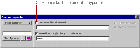

PATH
Documentation > WebObjects 4.5 >
Tools and Techniques
Anchors
An anchor (<A>) is a named location within a document that can be referenced by a hyperlink. Click
on the toolbar to create an anchor.
-
Type the text that the anchor should contain. As you type, the text is underlined.
Alternatively, you can select existing text and then click
once to convert the text to an anchor.
-
Use the Inspector to set the name of the anchor. You can also change the anchor to a hyperlink.

Note
: While the anchor's name cannot change, it's possible to vary its text at run time by using a dynamic string (see
Dynamic Strings
) inside the anchor.
© 1999 Apple Computer, Inc. – (Last Updated July 27 99)